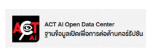

แหล่งที่มาข้อมูลและสัญญาอนุญาตทั้งหมด
รวบรวมแหล่งอ้างอิงข้อมูลทางวิชาการ สถิติการเลือกตั้ง โครงสร้างภาครัฐ โครงการอวกาศระดับ NASA และสัญญาอนุญาตทรัพย์สินทางปัญญาของทั้งเว็บไซต์ “รัฐไทยก้าวหน้า” และโปรเจกต์ทั้งหมด
ทั้งหมด
🔍 การหาข้อมูล & ชุดข้อมูลเปิด
💡 ไอเดียพัฒนาเว็บ & ครีเอเตอร์ YT
🌍 ศูนย์ข้อมูลโลก & สภาพภูมิอากาศ (NASA Climate)
📊 สถิติประเทศไทย & นโยบายสาธารณะ
🔬 แบบจำลอง STEM & วิทยาการคำนวณ
🗳️ ประชามติ 2569 (ล่าสุด)
🏛️ รัฐสภา & การเลือกตั้ง
👑 ครม. & โครงสร้าง 20 กระทรวง
🛰️ อวกาศ & นาซา (NASA)
📸 สัญญาอนุญาตภาพถ่าย
💻 โอเพนซอร์ส & ฟอนต์
🗺️ ผังอ้างอิงการสืบค้นข้อมูลและแรงบันดาลใจพัฒนาเว็บ:
รวบรวมหน่วยงานภาครัฐด้านความโปร่งใส ชุดข้อมูลเปิด สารานุกรม และครีเอเตอร์ YouTube สาย Web Development & Programming
ดูผังสรุปภาพรวมต้นฉบับ ↗
🔍 การหาข้อมูล และชุดข้อมูลเปิดภาครัฐ (Open Data & Research)7 แหล่งข้อมูล
แหล่งสืบค้นข้อมูลปฐมภูมิ ความโปร่งใส บัญชีข้อมูลภาครัฐ และสารานุกรมที่ใช้ในการรวบรวมข้อมูลทั่วทั้งเว็บไซต์
โครงการ Zero Tolerance คนไทยไม่ทนต่อการทุจริต
สำนักงาน ป.ป.ช. (NACC)
ข้อมูลสาธารณะ
แนวทางการต่อต้านการทุจริต สถิติดัชนีการประเมินคุณธรรมและความโปร่งใส (ITA) บัญชีแสดงรายการทรัพย์สินและหนี้สินของผู้ดำรงตำแหน่งทางการเมือง และฐานข้อมูลคดีทุจริต
วิกิพีเดีย สารานุกรมเสรีภาษาไทย
มูลนิธิวิกิมีเดีย (Wikimedia Foundation)
CC BY-SA 4.0
ฐานข้อมูลสารานุกรมเสรี ประวัติศาสตร์การเมืองไทย ไทม์ไลน์การเลือกตั้ง 2476-2569 ประวัติบุคคลสำคัญ อดีตนายกรัฐมนตรี คณะรัฐมนตรี และข้อมูลพรรคการเมืองในอดีต
ระบบบัญชีข้อมูลภาครัฐ (GD Catalog)
สถาบันข้อมูลขนาดใหญ่ (BDI) / data.go.th
Open Gov Data
ระบบสารบัญและบัญชีรายการชุดข้อมูลเปิดภาครัฐ (Government Data Catalog) รวบรวมชุดข้อมูลจากหน่วยงานรัฐไทยเพื่อการสืบค้น วิเคราะห์ และเชื่อมโยงข้อมูลสู่สาธารณะ
สำนักงานพัฒนารัฐบาลดิจิทัล (DGA)
สพร. (องค์การมหาชน)
มาตรฐานภาครัฐ
ศูนย์กลางการพัฒนารัฐบาลดิจิทัลของไทย ผู้กำหนดกรอบมาตรฐานการจัดทำและเปิดเผยชุดข้อมูลดิจิทัลภาครัฐ (Open Government Data Standard) และระบบบริการรัฐแบบดิจิทัล

ACT Ai Open Data Center
องค์กรต่อต้านคอร์รัปชัน (ประเทศไทย)
Open Data
ฐานข้อมูลเปิดเพื่อการต่อต้านคอร์รัปชัน เครื่องมือสืบค้นโครงการจัดซื้อจัดจ้างภาครัฐด้วยปัญญาประดิษฐ์ ตรวจสอบความเชื่อมโยงของสัญญา คู่สัญญา และการใช้งบประมาณแผ่นดิน
เว็บไซต์ทำเนียบรัฐบาล (Royal Thai Government)
สำนักโฆษก สำนักเลขาธิการนายกรัฐมนตรี
ข้อมูลทางการ
รายงานมติคณะรัฐมนตรีอย่างเป็นทางการ ประกาศและแถลงการณ์ของรัฐบาลไทย โครงสร้างฝ่ายบริหาร ข้อมูลภารกิจนายกรัฐมนตรีและรัฐมนตรีประจำกระทรวง
แผนที่พิกัด 77 จังหวัดประเทศไทย (SimpleMaps)
SimpleMaps Thailand GIS Data
Attribution
เวกเตอร์แผนที่ประเทศไทยระบบ SVG พิกัดและขอบเขตทางภูมิศาสตร์ 77 จังหวัด ใช้ในการเรนเดอร์แผนที่จำแนกสีผลการเลือกตั้งและผลประชามติ 2569 แบบตอบสนอง
💡 หาข้อมูลในการพัฒนาเว็บไซต์และไอเดีย YT (Web Dev & Inspiration)8 ครีเอเตอร์และแหล่งไอเดีย
ช่อง YouTube และครีเอเตอร์สายเทคโนโลยีที่ใช้เป็นแหล่งศึกษาความรู้ เทคนิคการเขียนโค้ด สถาปัตยกรรมเว็บ และไอเดียการพัฒนาเว็บไซต์
NASA Goddard (ศูนย์การบินอวกาศก็อดเดิร์ด)
YouTube: @NASAGoddard · ผู้ติดตาม 1.7 ล้านคน
Verified YouTube Channel
ช่องทางการของศูนย์ NASA Goddard Space Flight Center ต้นแบบวิดีโอแอนิเมชันวิทยาศาสตร์ สภาพภูมิอากาศโลก (Climate Visualizations), วิดีโออธิบายปรากฏการณ์ดาราศาสตร์ และแบบจำลองซูเปอร์คอมพิวเตอร์ที่ใช้อ้างอิงในเว็บ
BorntoDev (พี่เปิร์ธ พชร)
YouTube: @borntodev · สื่อการเรียนรู้โปรแกรมมิ่ง
YouTube Creator
แหล่งศึกษาพื้นฐานวิทยาการคอมพิวเตอร์ การเขียนโปรแกรมสำหรับผู้เริ่มต้น ตรรกะ Logic, Web Fundamentals และการอัปเดตสาระเทคโนโลยีเพื่อแรงบันดาลใจนักพัฒนา
BoomBigNose (คุณบูม)
YouTube: @BoomBigNose · AI Agents & Modern Dev
YouTube Creator
เจาะลึกระบบ AI Agent Automation, Claude Code, Vibe Coding, n8n workflows และการประยุกต์ใช้โมเดล AI ช่วยเขียนโค้ดและสร้างสรรค์นวัตกรรมเว็บแบบก้าวกระโดด
Patiphan Dev (คุณปฏิภาณ เพ็งเภา)
YouTube: @patiphan-dev · Frontend Web Specialist
YouTube Creator
คอร์สและการสอนพัฒนาเว็บไซต์ Frontend เชิงปฏิบัติ ตั้งแต่ HTML, Modern CSS, Responsive Design, Tailwind CSS, JavaScript ES6+ ไปจนถึง React และเทคนิคขึ้นโครงหน้าเว็บ
Ultimate Python
YouTube: @UltimatePython · Data & Automation
YouTube Creator
เทคนิคการจัดการข้อมูล การทำ Data Cleaning, Data Wrangling, อัลกอริทึม และระบบอัตโนมัติ เพื่อนำชุดข้อมูลสถิติมหาศาลมาจัดระเบียบและแสดงผลบนแดชบอร์ด
โครงสร้างสถาปัตยกรรมและ Component Design
YouTube Dev Ideas · ระบบโมดูลาร์และเลย์เอาต์
Dev Inspiration
แนวคิดการจัดระเบียบโมดูลาร์เว็บ การแบ่งเลเยอร์ Component, CSS Grid/Flexbox ขั้นสูง และการวางโครงสร้างเว็บที่รองรับการขยายตัว (Scalable Frontend)
ไอเดียการออกแบบ Interactive และลูกเล่น UI/UX
YouTube Creative Dev · การสร้างปฏิสัมพันธ์กับผู้ใช้
UX/UI Concepts
เทคนิคการออกแบบ Micro-interactions, แอนิเมชันตอนเลื่อนหน้าจอ, การเน้นความคมชัดของข้อมูลสถิติ และการทำให้ผู้ใช้งานเข้าใจข้อมูลซับซ้อนได้อย่างเป็นธรรมชาติ
ตรรกะการคิดวิเคราะห์และการแก้ปัญหาเชิงลึก
YouTube Tech Mindset · Problem Solving & Logic
Dev Mindset
แนวทางการวิเคราะห์บัก การจัดลำดับความสำคัญของฟีเจอร์ แนวคิดการเรียนรู้สิ่งใหม่ตลอดเวลา (Continuous Learning) และจิตวิญญาณแห่งการสร้างสรรค์โปรเจกต์
🌍 ศูนย์ข้อมูลโลก สภาพภูมิอากาศ และสถิติวิทยาศาสตร์ (NASA & World Climate Data)8 แหล่งข้อมูล + 4 ไอเดียเทคนิค
ใช้ในหน้าศูนย์ข้อมูลโลก (stats/explore.html) — ขับเคลื่อนแผนที่โลกร้อน 1880–2025, แบบจำลอง CO₂, และการวิเคราะห์สภาพภูมิอากาศระดับโลก
NASA GISTEMP v4 (อุณหภูมิผิวโลก 1880–2025)
NASA Goddard Institute for Space Studies (GISS)
Public Domain / Open Data
ไฟล์กริด gistemp1200_GHCNv4_ERSSTv5.nc ความละเอียด 2°×2° (180×90 จุด) รวบรวมข้อมูลส่วนต่างอุณหภูมิพื้นผิวโลกรายเดือนย้อนหลัง 146 ปี เทียบค่าเฉลี่ยฐาน ค.ศ. 1951–1980
NASA Goddard SVS (ภาพเคลื่อนไหวโลกร้อน 1880–2025)
NASA Scientific Visualization Studio (SVS)
Public Domain
ชุดข้อมูลและแอนิเมชัน Global Temperature Anomalies 1880–2025 และคลิปแบบจำลองบรรยากาศ A Year in the Life of Earth's CO₂ แสดงการเคลื่อนที่ของก๊าซเรือนกระจกทั่วโลก
NOAA ERSSTv5 & ดัชนีปรากฏการณ์ ENSO
NOAA NCEI / Climate Prediction Center (CPC)
Open Science Data
ข้อมูลอุณหภูมิผิวน้ำทะเล Extended Reconstructed Sea Surface Temperature และดัชนีชี้วัดเอลนีโญ/ลานีญา Niño 3.4, ONI (Oceanic Niño Index) และ RONI (Relative ONI)
NOAA CarbonTracker CT2025 (ข้อมูล CO₂ จริง)
NOAA Global Monitoring Laboratory
Open Science Data
ระบบตรวจวัดและติดตามความเข้มข้นของก๊าซคาร์บอนไดออกไซด์ในชั้นบรรยากาศโลก (Atmospheric CO₂) จากสถานีตรวจวัดทั่วโลกเพื่อเทียบเคียงกับแบบจำลอง GEOS
NSIDC (% การละลายน้ำแข็งขั้วโลก)
National Snow and Ice Data Center (USA)
Open Data
สถิติวัดขนาดและพื้นที่แผ่นน้ำแข็งทะเลในแถบอาร์กติก (Arctic) และแอนตาร์กติกา (Antarctic) ติดตามอัตราการละลายจากภาวะโลกร้อน
EM-DAT (ฐานข้อมูลภัยพิบัติธรรมชาติสากล)
Centre for Research on the Epidemiology of Disasters (CRED)
Open Access
สถิติบันทึกความถี่ ผลกระทบ มูลค่าความเสียหาย และจำนวนผู้ประสบภัยจากภัยพิบัติธรรมชาติทั่วโลก เช่น น้ำท่วม ภัยแล้ง พายุ และคลื่นความร้อน
Our World in Data (OWID) & Global Carbon Project
University of Oxford / Global Carbon Project
CC BY 4.0
ข้อมูลการปล่อยก๊าซเรือนกระจกรายประเทศ การเปลี่ยนผ่านสู่พลังงานหมุนเวียน แหล่งกำเนิดไฟฟ้า และการปล่อยคาร์บอนต่อหัวประชากร
Natural Earth & TopoJSON World Atlas
Natural Earth / Mike Bostock
Public Domain / ISC
เส้นขอบเขตทวีปและพรมแดนประเทศความละเอียด 110m (countries-110m) ฉายภาพแบบ Equal Earth Projection เพื่อให้พื้นที่ทวีปไม่บิดเบือนสัดส่วน
💡 ไอเดีย: Canvas 2D NetCDF Fast Grid Engine
เทคนิคการเรนเดอร์ใน stats/climate-map.js
Engineering Concept
แปลงข้อมูลกริด NetCDF 180×90 จุดเป็นภาพแคนวาส 2 มิติความเร็วสูง ประมวลผลและไล่เฉดสีในฝั่งเบราว์เซอร์โดยตรง ลื่นไหลบนทุกอุปกรณ์และมือถือ
💡 ไอเดีย: Live Time-Travel & Dual-Year Compare
Interactive UI/UX สำหรับวิเคราะห์ 146 ปี
Interactive Design
ระบบสไลเดอร์ไทม์ไลน์ 1880–2025 ที่ซิงก์แผนที่โลก ตัวเลข KPI ค่าความร้อนขั้วโลก/ไทย และ Warming Stripes พร้อมโหมดเปรียบเทียบ 2 ยุคสมัยคู่ขนานซ้าย-ขวา
💡 ไอเดีย: Missing-Value Neighbor Interpolation
อัลกอริทึมเติมเต็มข้อมูลในอดีต (1880s)
Algorithm Concept
จำลองช่องที่ขาดหายไปในอดีตด้วยค่าเฉลี่ยเชิงพื้นที่จากช่องข้างเคียงทีละวงรอบ (พร้อมขึ้นเครื่องหมาย ≈) และมีปุ่มเปิด/ปิดเพื่อความโปร่งใสของข้อมูลจริง
💡 ไอเดีย: 1-Byte Quantized NetCDF Compression
เทคนิคบีบอัดข้อมูลสภาพอากาศข้ามเครือข่าย
Optimization Concept
จัดเก็บค่าส่วนต่างอุณหภูมิเป็นจำนวนเต็ม 1 ไบต์ (ละเอียด 0.1°C) ทำให้ไฟล์กริด 146 ปีมีขนาดเล็กเพียงไม่กี่เมกะไบต์ สามารถโหลดและเรนเดอร์ได้ในทันที
📊 สถิติประเทศไทย เศรษฐกิจ สังคม และนโยบายสาธารณะ (National Statistics & Economy)13 แหล่งข้อมูลระดับชาติ
ใช้ในหน้าศูนย์ข้อมูลและสถิติ (stats/explore.html) — ครอบคลุมการคลังภาครัฐ, หนี้สาธารณะ, สถิติประชากร, สังคมสูงวัย, สาธารณสุข, การศึกษา, พลังงาน, เศรษฐกิจ และผังเมืองกรุงเทพฯ
หนี้สาธารณะและวินัยการเงินการคลัง
สำนักงานบริหารหนี้สาธารณะ (สบน.) · กระทรวงการคลัง
Open Gov Data
สถิติยอดหนี้สาธารณะคงค้างรายปี สัดส่วนหนี้สาธารณะต่อ GDP (ปี 2561–2568) ยอดหนี้เฉลี่ยต่อหัวประชากร และการติดตามกรอบเพดานหนี้ 70% ตาม พ.ร.บ.วินัยการเงินการคลังของรัฐ พ.ศ. 2561
งบประมาณรายจ่ายและโครงสร้างรายได้ภาษี
สำนักงบประมาณ & กรมสรรพากร · กระทรวงการคลัง
พระราชบัญญัติงบประมาณ
พ.ร.บ.งบประมาณรายจ่ายประจำปี 2568 การจัดสรรงบประมาณรายกระทรวง งบกลาง รายจ่ายประจำ vs ลงทุน วงเงินขาดดุลงบประมาณ และผลการจัดเก็บรายได้ภาษี (VAT, นิติบุคคล, บุคคลธรรมดา)
สถิติเกิด–ตาย และโครงสร้างประชากรไทย
สำนักบริหารการทะเบียน กรมการปกครอง (BORA)
สถิติทะเบียนราษฎร
ฐานข้อมูลสถิติจำนวนประชากรไทยรายปี ยอดคนเกิด ยอดคนตาย อัตราการเพิ่มตามธรรมชาติ และข้อมูลทะเบียนราษฎรระดับจังหวัดและราย 50 เขตในกรุงเทพมหานคร
อัตราเจริญพันธุ์และสถานการณ์สังคมสูงวัย
สถาบันวิจัยประชากรและสังคม ม.มหิดล & กรมกิจการผู้สูงอายุ
Open Research & Data
การสำรวจประชากรและสถิติอัตราเจริญพันธุ์รวม (TFR) ของไทยที่ลดลงสู่ 1.16 คนต่อสตรี รายงานสถานการณ์ผู้สูงอายุไทย และการเปลี่ยนแปลงพีระมิดประชากรเข้าสู่สังคมสูงวัยขั้นสุดยอด
หลักประกันสุขภาพถ้วนหน้าและกำลังคนแพทย์
สำนักงานหลักประกันสุขภาพแห่งชาติ (สปสช.) & แพทยสภา
Open Health Data
สถิติผู้ถือสิทธิบัตรทอง 30 บาท ประกันสังคม และสวัสดิการข้าราชการ สัดส่วนรายจ่ายสุขภาพที่ครัวเรือนจ่ายเอง และการกระจายตัวของแพทย์ต่อประชากรในแต่ละภูมิภาค
อายุคาดเฉลี่ยและสถิติโรค NCDs
กระทรวงสาธารณสุข (สธ.) & องค์การอนามัยโลก (WHO)
Public Health Statistics
สถิติ 10 อันดับแรกของสาเหตุการเสียชีวิตในประเทศไทย อัตราการเจ็บป่วยด้วยโรคไม่ติดต่อเรื้อรัง (NCDs) และสถิติแนวโน้มอายุคาดเฉลี่ยเมื่อแรกเกิดจำแนกตามเพศ
คุณภาพการศึกษาและความเสมอภาคทางการศึกษา
สสวท. (PISA Thailand) & กสศ. & สสช.
Educational Research
ผลการประเมินสมรรถนะนักเรียนมาตรฐานสากล OECD PISA Thailand ตัวชี้วัดความเป็นอยู่ที่ดีและการกลั่นแกล้งในโรงเรียน สถิติการมีงานทำตามวุฒิการศึกษา และแผนที่เด็กหลุดจากระบบ
GDP มหภาคและการคาดประมาณเศรษฐกิจไทย
สำนักงานสภาพัฒนาการเศรษฐกิจและสังคมแห่งชาติ (สศช.)
Official National Reports
ผลิตภัณฑ์มวลรวมในประเทศ (GDP) อัตราการเติบโตทางเศรษฐกิจ โครงสร้าง GDP รายสาขาในรูปแบบ Treemap การคาดประมาณประชากรระยะยาว พ.ศ. 2553–2583 และรายงานภาวะเศรษฐกิจไทย
หนี้ครัวเรือนไทยและเสถียรภาพการเงิน
ธนาคารแห่งประเทศไทย (ธปท.) & BIS
Central Bank Statistics
ข้อมูลสถิติหนี้ครัวเรือนต่อ GDP โครงสร้างสินเชื่อภาคครัวเรือน (อสังหาฯ บัตรเครดิต บุคคล รถยนต์) สถิติเปรียบเทียบหนี้ต่อ GDP ระดับโลกจาก BIS และดัชนีเงินเฟ้อจาก World Bank
การค้าระหว่างประเทศ การท่องเที่ยว และ GII
กระทรวงพาณิชย์ & ก.ท่องเที่ยวฯ & WIPO
Official Statistics
สถิติมูลค่าการส่งออก-นำเข้า ดุลการค้า คู่ค้าสำคัญ 5 อันดับแรก รายได้และจำนวนนักท่องเที่ยวต่างชาติรายสัญชาติ และดัชนีนวัตกรรมโลก (Global Innovation Index - GII) จาก WIPO
พลังงานไฟฟ้า เชื้อเพลิง และพลังงานหมุนเวียน
กฟผ. (EGAT) & สนพ. & กรมธุรกิจพลังงาน
Energy Open Data
สัดส่วนกำลังการผลิตไฟฟ้าตามสัญญาในระบบ กำลังการผลิตพลังงานหมุนเวียนและราคาที่จ่ายจริง สัดส่วนแหล่งเชื้อเพลิงผลิตไฟฟ้า และปริมาณการใช้น้ำมันในประเทศ
ข้อมูลเมืองกรุงเทพฯ อาคาร 3D และการจราจร
กรุงเทพมหานคร (กทม.) & OpenFreeMap & TomTom
Open Data / ODbL
สถิติประชากรราย 50 เขต ข้อมูลน้ำท่วมและงบประมาณเมือง แผนที่สามมิติรูปทรงอาคารจริงจาก OpenStreetMap/OpenFreeMap และดัชนีความหนาแน่นการจราจร TomTom Traffic Index
ข้อมูลเปรียบเทียบอาเซียนและภูมิรัฐศาสตร์โลก
World Bank & Transparency International & SIPRI
Open International Data
สถิติเปรียบเทียบ GDP และอัตราการเติบโต 10 ประเทศอาเซียน ดัชนีคอร์รัปชัน CPI 2025 แสนยานุภาพทางการทหารจาก SIPRI ปริมาณน้ำมันสำรองจาก OPEC/EIA และวัฏจักรความมั่งคั่งมหาอำนาจ
🔬 วิทยาการคำนวณ คณิตศาสตร์ & แบบจำลองฟิสิกส์ (STEM Simulation Labs)11 แบบจำลองและหลักสูตร
ใช้ในห้องทดลองคณิตศาสตร์และแบบจำลองวิทยาศาสตร์ (stats/explore.html) — ทฤษฎีฟิสิกส์ดาราศาสตร์, กลศาสตร์ควอนตัม, สัมพัทธภาพ, ระบาดวิทยา, วิทยาการรหัสลับ, และหลักสูตรคณิตศาสตร์ สสวท.
หลักสูตรคณิตศาสตร์ ม.ต้น · ม.ปลาย · มหาวิทยาลัย
สถาบันส่งเสริมการสอนวิทยาศาสตร์และเทคโนโลยี (สสวท.)
สื่อการศึกษามาตรฐาน
หนังสือเรียนคณิตศาสตร์พื้นฐานและเพิ่มเติม ม.1–ม.6 อ้างอิงหัวข้อ: ระบบพิกัด 2D & y=mx+c, พีทาโกรัส, พาราโบลา, วงกลมหนึ่งหน่วย, ภาคตัดกรวย 4 รูปแบบ, เวกเตอร์ 3D, แคลคูลัส, สนามเวกเตอร์, และสมการเชิงอนุพันธ์
ปรัชญาการสอน Visual Math & Interactive Sandbox
3Blue1Brown (Grant Sanderson) & GeoGebra
Educational Inspiration
แนวคิดการแปลงคณิตศาสตร์นามธรรมให้ “มองเห็นและสัมผัสได้” ผ่าน WebGL/Three.js และ Canvas 2D เช่น Gradient Descent บนพื้นผิวโค้ง 3D, สนามเวกเตอร์ Divergence & Curl และ Phasor Helix
กลศาสตร์วงโคจรอวกาศ & การถ่ายโอนโฮห์มันน์
NASA JPL Celestial Mechanics / Keplerian Orbit
Open Science / Public Domain
แบบจำลองการเคลื่อนที่ของดาวเคราะห์และวัตถุท้องฟ้าตามกฎของเคปเลอร์ การคำนวณสมการ Vis-Viva และการคำนวณ Delta-V สำหรับการย้ายวงโคจรระหว่างดาวเคราะห์แบบ Hohmann Transfer Orbit
แบบจำลองระบาดวิทยา SEIRD & ละอองลอย Aerosol
Agent-Based Epidemiological Model / Wells-Riley Formulation
Scientific Model
การจำลองตัวแทนประชากร (Agent-Based SEIRD) เคลื่อนที่ชนกันในพื้นที่จำลอง พร้อมการคำนวณฟิสิกส์การกระจายของละอองลอย (Aerosol Concentration) และผลของการสวมหน้ากากอนามัย
กลศาสตร์ควอนตัม & สัมพัทธภาพกาล-อวกาศบิดเบี้ยว
Schrödinger Equation & Einstein Schwarzschild Metric
Theoretical Physics
การจำลองการกระจายของกลุ่มคลื่นควอนตัม (Wavepacket) และการยุบตัวของฟังก์ชันคลื่น พร้อมแบบจำลอง Geodesics วิถีแสงและแผ่นกาล-อวกาศ (Spacetime Grid) ที่บิดเบี้ยวรอบหลุมดำ
สนามแม่เหล็กไฟฟ้าแมกซ์เวลล์ & ลมสุริยะ
Maxwell's Equations & NASA Heliophysics
Classical Electrodynamics
ระบบสมการแมกซ์เวลล์ 4 สมการสำหรับการแผ่คลื่นแม่เหล็กไฟฟ้า และแบบจำลอง Magnetosphere Canvas Simulator แสดงสนามแม่เหล็กโลกที่ต้านทานพลาสมาและรังสีจากลมสุริยะ
ทฤษฎีความอลวน & ตัวดึงดูดลอเรนซ์ (Lorenz Attractor)
Edward N. Lorenz (1963) / MIT Atmospheric Dynamics
Nonlinear Dynamics
การจำลอง 3D Lorenz Attractor ด้วยสมการเชิงอนุพันธ์สามมิติไม่เชิงเส้น dx/dt, dy/dt, dz/dt แสดงปรากฏการณ์ Butterfly Effect และรูปทรงแฟร็กทัลของระบบพยากรณ์อากาศ
วิทยาการรหัสลับเส้นโค้งวงรี (Elliptic Curves)
Secp256k1 Curve / ECDSA Standards
Cryptographic Standards
การแสดงผลเชิงเรขาคณิตของการบวกจุดบนเส้นโค้งวงรี y² = x³ + 7 การคูณสเกลาร์ (Point Multiplication) และกลไกการแลกเปลี่ยนกุญแจลับ Diffie-Hellman Key Exchange
อนุกรมฟูเรียร์ & เครื่องวาดภาพด้วยวงล้อฮาร์มอนิก
Fourier Series / Discrete Fourier Transform (DFT)
Mathematical Analysis
เครื่องมือแปลงสัญญาณและขอบภาพเป็นวงล้อหมุนเชิงซ้อน (Epicycles) คำนวณสัมประสิทธิ์ความถี่และแอมพลิจูดด้วย DFT เพื่อให้คอมพิวเตอร์วาดรูปทรง 2 มิติอย่างต่อเนื่อง
กฎกำลังสองของแลงเชสเตอร์ & จำลองยุทธการรบอวกาศ
Lanchester's Power Laws / Operations Research
Mathematical Combat Model
การจำลองการต่อสู้ของกองยานอวกาศ (Stellaris Space Fleet) ตามกฎคณิตศาสตร์ Lanchester N² Law พร้อมระบบสังเคราะห์เสียงเลเซอร์ด้วย Web Audio API แบบเรียลไทม์
ทวีปเลื่อน 540 ล้านปี & สายพานยักษ์มหาสมุทร
PALEOMAP Project & UNESCO EOS-80 & RAPID/OSNAP
Paleogeography & Oceanography
แบบจำลองการเคลื่อนที่ของแผ่นทวีปตั้งแต่ยุคแคมเบรียนถึงปัจจุบัน 540 ล้านปี และลูกโลก 3D สายพานกระแสน้ำยักษ์โลก (Thermohaline Circulation) คำนวณความหนาแน่นน้ำทะเลตามมาตรฐาน UNESCO
🛰️ โครงการอวกาศและดาราศาสตร์ (NASA & Space Resources)5 แหล่งข้อมูล
ใช้ในแบบจำลองระบบสุริยะ 3 มิติ (Solar Atlas และ Solar System Orrery) — นำเข้าโมเดลและข้อมูลดิบดาราศาสตร์จากองค์การบริหารการบินและอวกาศแห่งชาติ สหรัฐอเมริกา (NASA)
โมเดล 3 มิติยานอวกาศจริง 8 ลำ
NASA 3D Resources / NASA VTAD
Public Domain
โมเดลไฟล์ .glb/.gltf ของยาน Voyager 1, Voyager 2, Pioneer 10, Pioneer 11, New Horizons, Parker Solar Probe, James Webb Space Telescope, และ Europa Clipper บีบอัดด้วย Draco เพื่อโหลดแบบเรียลไทม์บนเว็บ
โมเดลซากซูเปอร์โนวา 3 มิติ
Chandra X-ray Observatory / Hubble Space Telescope
Public Domain
โมเดล 3 มิติจากข้อมูลรังสีเอกซ์ของกล้องโทรทรรศน์จันทราและฮับเบิล ได้แก่ เนบิวลาปู (Crab Nebula) และ วงแหวนซูเปอร์โนวา 1987A (SN 1987A) แสดงสัดส่วนตามขนาดจริง
พิกัดวงโคจรวัตถุท้องฟ้า (Ephemeris)
NASA Jet Propulsion Laboratory (JPL)
Open Science Data
ระบบ JPL Horizons System ใช้คำนวณตำแหน่ง เวกเตอร์ความเร็ว และวงโคจรความแม่นยำสูงระดับอวกาศ ของดวงอาทิตย์ ดาวเคราะห์ 8 ดวง ดวงจันทร์บริวาร และยานสำรวจ
แผนที่รังสีไมโครเวฟพื้นหลัง (CMB)
NASA / WMAP Science Team
Public Domain
แผนที่คลื่นรังสีไมโครเวฟพื้นหลังจากเอกภพยุคแรก (Cosmic Microwave Background) สร้างจากข้อมูลดิบ WMAP 9-Year ILC แสดงภาพขอบเอกภพที่สังเกตได้
คลังข้อมูลดาวเคราะห์นอกระบบ
NASA Exoplanet Science Institute / Caltech IPAC
Open Data
ข้อมูลมวล ขนาด และคาบการโคจรของระบบดาวเคราะห์นอกระบบสุริยะ ที่ค้นพบโดยกล้องโทรทรรศน์อวกาศเคปเลอร์ (Kepler) และ TESS
🗳️ ประชามติรัฐธรรมนูญ 2569 (Referendum 2569 — ล่าสุด)3 แหล่งข้อมูล
ใช้ในหน้าสรุปผลประชามติร่างรัฐธรรมนูญฉบับใหม่ 14 กุมภาพันธ์ 2569 (referendum.html)
ผลคะแนนประชามติรวมและรายภูมิภาค
iLaw (โครงการอินเทอร์เน็ตเพื่อกฎหมายประชาชน)
ข้อมูลสาธารณะ
ยอดรวมคะแนนเห็นชอบ (21,621,638 เสียง), ไม่เห็นชอบ (11,241,653 เสียง), ไม่แสดงความคิดเห็น (3,074,330 เสียง), ผลแยกตาม 6 ภูมิภาค + นอกราชอาณาจักร และ 5 จังหวัดที่มีผู้เห็นชอบสูงสุด
สถิติผู้มาใช้สิทธิและผลอย่างไม่เป็นทางการ
สำนักงานคณะกรรมการการเลือกตั้ง (กกต.)
ข้อมูลทางการ
ตัวเลขผู้มีสิทธิออกเสียง (52,922,923 คน), ผู้มาใช้สิทธิ (36,870,473 คน หรือ 69.7%), บัตรเสีย (932,852 ใบ หรือ 2.5%) จากการรายงานผลนับครบ 100%
แผนที่พิกัดจังหวัดประเทศไทย (SVG GIS Map)
SimpleMaps Thailand
Free with Attribution
โครงร่างเวกเตอร์ SVG รูปทรง 77 จังหวัดของประเทศไทย พิกัดทางภูมิศาสตร์ที่นำมาปรับแต่งระบบซูมแบบ Interactive และระบายสีตามผลมติ
🏛️ รัฐสภา การเลือกตั้ง และประวัติศาสตร์การเมืองไทย6 แหล่งข้อมูล
ใช้ในหน้าผลเลือกตั้ง ส.ส. รายเขต, บัญชีรายชื่อ, คะแนนพรรค, รัฐสภา, กรรมาธิการ, ผู้ว่าฯ กทม. และไทม์ไลน์ 2476-2569
ข้อมูลผลการเลือกตั้ง ส.ส. และเขตเลือกตั้ง
สำนักงานคณะกรรมการการเลือกตั้ง (กกต.)
ข้อมูลทางการ
สถิติผลคะแนนการเลือกตั้ง ส.ส. ปี 2566, 2562 และในอดีต ข้อมูลการแบ่งเขตเลือกตั้ง 400 เขต และคะแนนระบบบัญชีรายชื่อพรรคการเมือง
ฐานข้อมูลสมาชิกสภาผู้แทนราษฎร & กรรมาธิการ
สำนักงานเลขาธิการสภาผู้แทนราษฎร
ข้อมูลราชการ
รายนาม ส.ส. 500 ท่าน คณะกรรมาธิการสามัญ 35 คณะ รายชื่อประธานกรรมาธิการ และประวัติการทำงานในฝ่ายนิติบัญญัติ
ฐานข้อมูลสมาชิกวุฒิสภา (ส.ว.)
สำนักงานเลขาธิการวุฒิสภา
ข้อมูลราชการ
รายนามสมาชิกวุฒิสภา 200 ท่านจากการคัดเลือกตามกลุ่มอาชีพ ประวัติและบทบาทในที่ประชุมรัฐสภา
ฐานข้อมูลและแนวทางการนำเสนอผลเลือกตั้ง
Elect.in.th (Civic Tech Community)
Open Data / Creative Commons
แนวคิดการจัดระเบียบข้อมูลสถิติการเลือกตั้งย้อนหลัง และเทคนิคการนำเสนอผลคะแนนผ่าน Data Visualization เพื่อการมีส่วนร่วมของประชาชน
ประวัติศาสตร์รัฐธรรมนูญและการเมืองไทย 2476-2569
สถาบันพระปกเกล้า (KPI) / วิกิพีเดียภาษาไทย
CC BY-SA 4.0
ข้อมูลเหตุการณ์สำคัญ การยุบสภา การรัฐประหาร และไทม์ไลน์การเลือกตั้ง 28 ครั้งในประวัติศาสตร์ไทย (timeline.html)
สถิติการเลือกตั้งผู้ว่าฯ กทม. และ ส.ก. ทุกยุคสมัย
ศาลาว่าการกรุงเทพมหานคร / กกต. ท้องถิ่น
ข้อมูลสาธารณะ
ผลคะแนนการเลือกตั้งผู้ว่าราชการกรุงเทพมหานครตั้งแต่ปี 2518 ถึง 2565 รายชื่อผู้สมัครและคะแนน 50 เขต กทม. (bangkok.html)
👑 ทำเนียบคณะรัฐมนตรี และโครงสร้าง 20 กระทรวง2 แหล่งข้อมูลหลัก
ใช้ในหน้าชุดคณะรัฐมนตรี (cabinet/index.html) และแผนผังโครงสร้างรัฐไทย (structure.html)
ทำเนียบคณะรัฐมนตรี คณะที่ 1 - 66 & ประกาศพระบรมราชโองการ
สำนักเลขาธิการคณะรัฐมนตรี (สลค.) / ราชกิจจานุเบกษา
เอกสารราชการ
รายนามนายกรัฐมนตรี รองนายกรัฐมนตรี และรัฐมนตรีว่าการ/ช่วยว่าการ ทุกกระทรวง ตั้งแต่ พ.ศ. 2475 ถึงปัจจุบัน วันแต่งตั้ง วันสิ้นสุด และประกาศทางราชการ
แผนผังส่วนราชการ 20 กระทรวง ทบวง กรม
สำนักงาน ก.พ.ร. (OPDC)
พ.ร.บ. ปรับปรุงกระทรวงฯ
โครงสร้างการแบ่งส่วนราชการตาม พ.ร.บ. ปรับปรุงกระทรวง ทบวง กรม พ.ศ. 2545 หน่วยงานระดับกรม รัฐวิสาหกิจ องค์การมหาชน และหน่วยงานอิสระตามรัฐธรรมนูญ
💻 เทคโนโลยี ซอฟต์แวร์ และฟอนต์โอเพนซอร์ส5 ไลบรารี
ชุดเครื่องมือและฟอนต์ที่ใช้ขับเคลื่อนระบบการแสดงผลแบบ Interactive ทั้งเว็บ
Three.js 3D WebGL Library
Mr.doob & Contributors
MIT License
ไลบรารีเรนเดอร์กราฟิกสามมิติระดับสูงผ่าน WebGL ในโครงการ Solar Atlas และระบบสุริยะ
GSAP (GreenSock Animation Platform)
GreenSock, Inc.
Standard License
ระบบขับเคลื่อนแอนิเมชัน การเลื่อนไทม์ไลน์ และ Scrollytelling ในหน้า Hub และบทความนำเสนอ
D3.js Data-Driven Documents
Mike Bostock & Contributors
ISC License
เครื่องมือจัดการข้อมูลและคำนวณกราฟิกทางสถิติ แผนภาพรัฐสภา และผังโครงสร้าง
Lenis Smooth Scroll
Studio Freight / Darkroom Engineering
MIT License
ระบบเลื่อนหน้าจอที่นุ่มนวลเป็นธรรมชาติ สำหรับการอ่านเนื้อหาและเรื่องเล่าเชิงโต้ตอบ
Google Fonts (Kanit, Sarabun, Prompt, Rajdhani, IBM Plex Mono)
Cadson Demak / Google Fonts
SIL Open Font License 1.1
ชุดฟอนต์ภาษาไทยและภาษาอังกฤษคุณภาพสูงที่ใช้เป็นมาตรฐานการจัดวางตัวอักษรของทั้งเว็บไซต์
📸 สัญญาอนุญาตภาพถ่ายและเครื่องหมาย (Image & Logo Licenses)
ภาพบุคคลส่วนใหญ่มาจากวิกิมีเดียคอมมอนส์ (Wikimedia Commons) ภายใต้สัญญาอนุญาตแบบครีเอทีฟคอมมอนส์ ส่วนโลโก้พรรคใช้ตามหลักการใช้งานโดยชอบธรรม (Fair Use) เพื่อการศึกษาและนำเสนอข้อมูลเท่านั้น
หมายเหตุการตรวจสอบ — รายการที่ขึ้นว่า ยังไม่ยืนยัน
คือภาพที่ยังสืบที่มาไม่ครบ ถือเป็นรายการที่ต้องตรวจสอบก่อนเผยแพร่ต่อ ไม่ใช่การอ้างว่าใช้ได้
· เว็บไซต์นี้จัดทำเพื่อประโยชน์สาธารณะและการศึกษา ไม่ใช่เอกสารราชการ และไม่มีความเกี่ยวข้องกับพรรคการเมืองหรือหน่วยงานใด
กำลังโหลดข้อมูลเครดิตภาพ…